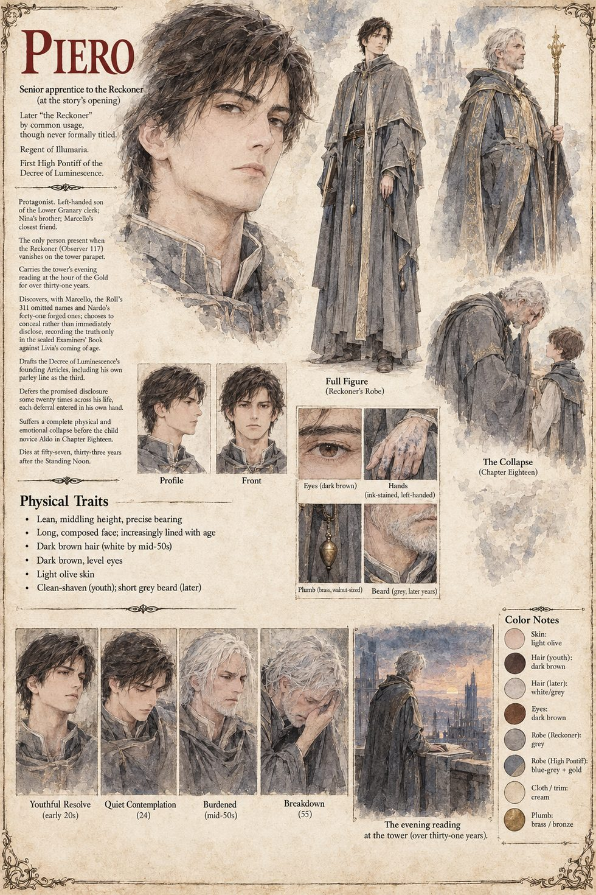

Piero
Senior apprentice to the Reckoner · later Regent of Illumaria and first High Pontiff · 21 at the story's opening
The left-handed son of the Lower Granary's clerk, taken on at twelve for the neatness of his hand and wanting, from then on, nothing more ambitious than to count sacks. Senior of the seven apprentices of Severin, he hums when he computes, softly and always in threes: a nursery counting-song of his mother's, eleven verses of loaves, lamps and a door that is always warm, which Nina sang until she could not. Marcello shares his bread crusts on the tower stair and is, without either of them ever saying so, the check to his count.
On the evening of the Standing Noon the Reckoner lays a brass plumb across his palm, says The residue holds, and is not on the tower when Piero turns round; Piero writes a zero in the book, and the sentence beneath it. He takes the head of the table that compiles the Roll of the Lit, answers the king's question at the Saltway Gate with It was his rule and a stranger's with a sentence that every witness hears as a refusal, and learns from Marcello that the Roll is three hundred and eleven names short. He chooses to append rather than disclose, promising a correction in the open on the day Livia is twenty-one, and drafts the Decree of Luminescence around the only true things he has: a tower at dusk, and the last words a man said there. The promised day is deferred, again and again, for good reasons. He climbs to take the evening reading for thirty-one years, until a novice, Aldo, asks what the command is for. He dies in his fifty-seventh year with the brass weight in his sleeve.
“Because he told me to.”